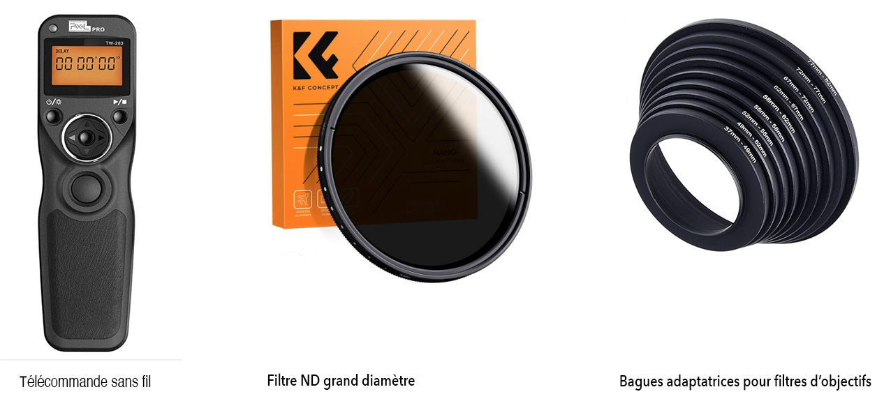
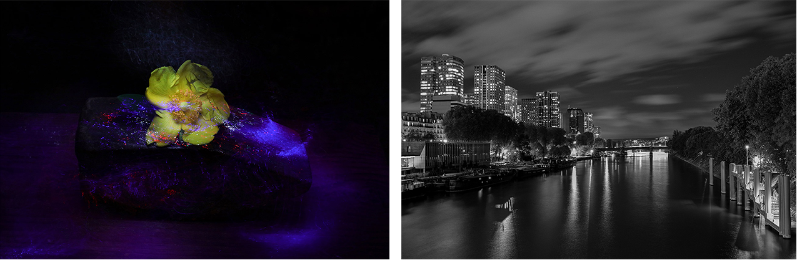

La pose longue est une technique photographique qui utilise une vitesse d'obturation lente afin d'allonger le temps d'exposition d'une photographie. Elle se caractérise par le flou des objets en mouvement, créant ainsi un effet visuel unique. La pose longue est principalement utilisée pour les paysages et le light painting. Voici quelques points essentiels
Réglages de l'appareil photo en mode manuel :
- Il est recommandé de ne pas dépasser f/11, car une ouverture plus petite entraînera une diminution de la qualité de l'image en raison de la diffraction ;
- La vitesse d'obturation ira de quelques secondes à 30 secondes. Si elle dépasse 30 secondes, vous devez utiliser le mode Bulb (appuyez sur le déclencheur pour commencer l'exposition et relâchez-le pour la terminer) ou le mode T (appuyez sur le déclencheur pour commencer l'exposition et appuyez à nouveau pour la terminer).
- Le réglage ISO sera la valeur ISO native la plus basse de l'appareil photo, généralement ISO 100.
En conditions de faible luminosité, il est recommandé d'utiliser la mise au point manuelle pour contrôler la position du point de mise au point, et parfois d'utiliser le point d'hyperfocale
Éviter les bougés
Lors de prises de vue avec de longues expositions, il est important d'éviter le flou de bougé :

- Utilisez un trépied pour stabiliser la position de la caméra, évitez de monter trop la colonne pour préserver la stabilité, en cas de vent, lester le trépied.
- Utilisez un déclencheur à câble, ou à distance qui pourra aussi vous servir d'intervallomètre
- En mode Retardateur, l'exposition commence 2 à 10 secondes après avoir appuyé sur le déclencheur, ce qui évite les vibrations. Si vous avez un reflex à miroir, relevez celui-ci.
Éviter la surexposition
- En cas de surexposition, un filtre ND doit être utilisé pour réduire davantage la vitesse d'obturation.
- Pour éviter le vignettage et utiliser le même jeu de filtres ND avec des objectif de diamètres différents, il est recommandé d'utiliser un filtre ND plus grand, comme un filtre de 82 mm, et de l'utiliser avec une bague d'adaptation.
- J'utilise le ND3.0 (10 stops, pour la photographie de jour) et de ND1.8 (6 stops, pour la photographie au coucher du soleil ou en accéléré). Il existe aussi des ND à puissance variable
- Il est possible d'empiler les filtres ND, mais cela provoque un vignettage, notamment sur les objectifs ultra grand-angle : c'est pourquoi on n'empile généralement pas plus de deux filtres ND.
Les temps d'exposition longs ont un impact certain sur la qualité de l'image. Plus le temps d'exposition est long, plus le bruit est important et plus les exigences en post-traitement sont élevées.
